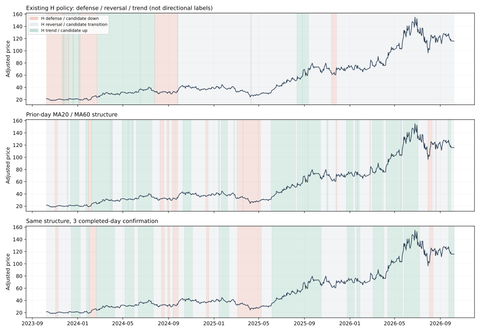

先定义行情区间，再验证不同策略
H模式审计 · 三种固定、事前可知的方向规则 · 5日与20日分开评估 · 不改交易默认
截图中的差异：展示的是交易模式，不是涨跌区间
原图读取H模型的mode数组，与当前选中的D或融资L策略独立。H先判断过去反转交易是否有优势：此前约126日、RSI低组和高组各至少20个已结束次日收益样本，低组平均毛收益超过0.2%，且高于高组0.2%，就优先标为“反转交易”；不满足才考虑趋势参与。已披露利润增长不为正则防御。收益样本只到当日之前已能知道的结果，优先级本身并非前视错误。
因此，上涨期间长期紫色是定义目标不同，并非紫色表示股票横盘。近三年727日中H反转模式458日；其中183日同时满足本轮简单均线上行结构，51日满足下行结构，其余224日未确认。当前默认D＋所有满仓融资，也不是由H背景决定买卖。把这层背景当作默认策略的行情分区，容易产生误解。
已将首页H背景改为可选的“叠加H交易模式对照”，默认不叠加，并注明与D/L独立。没有把未经验证的新分区直接替换成默认交易规则。以下图示仅作研究对照，三种方法全部使用当时之前的数据；H第一行的颜色含义与下面候选不同。

区间定义要回答两个不同问题
当前是什么状态：根据已完成行情描述上涨结构、下跌结构或过渡期。接下来适合哪种交易：需要另测该状态下的未来收益、下行风险、反弹与策略损益。下行状态之后可能反弹，上行状态也可能发生拐点；不能要求当时识别器提前知道每一个顶底，再把事后分段当实时能力。
本轮不把所有非趋势状态称为“震荡区”。它可能是窄幅整理，也可能是剧烈反复或转折，尚未证明适合做T。更合理的研究结构是方向状态＋波动／风险状态＋入场信号，分别验证后再组合。一个适合20日持有的状态划分，未必适合5日或分钟交易。
三个预先固定的定义，不搜索最佳阈值
| 候选 | 上行 | 下行 | 其余 |
|---|---|---|---|
| MA均线结构 | 前收盘＞MA20＞MA60，MA20高于5日前 | 前收盘＜MA20＜MA60，MA20低于5日前 | 过渡／未确认 |
| ER方向效率 | 过去20日净涨幅／逐日绝对变动总和≥0.35 | 同一比率≤−0.35 | 过渡／未确认 |
| MA3连续确认 | MA的新状态连续出现3个已完成日才切换 | 同左；不倒填到第一天 | 尚未确认时保留前状态 |
均用截至前一收盘的前复权行情。ER阈值0.35沿用早期研究既有设置，不按本轮结果搜索。MA3在初始无有效历史时用未确认状态；连续确认增加至少两个观测日的响应时间。均线斜率相等时按未确认，使用1e−10数值容差处理浮点相等，不是新择时参数。
如何客观检验“准确”，避免只看图形顺眼
对每个决策日，另算从当日复权开盘到第5／20个交易日复权收盘的涨幅；超过“前20日对数收益标准差×√持有天数”算明显上涨，低于负阈值算明显下跌，中间算未越阈值。阈值在当天之前可知，后续价格仅用于评分，绝不进入状态计算。
“未越阈值”只描述终点涨跌，不能证明过程平静、可低买高卖。标签不是唯一真理，本轮只是固定检验口径。普通准确率是三类判断命中比例；平衡准确率是每个实际类别召回率的平均，避免一直猜样本最多的中间类就拿高分。缺少某一实际类别的分段只对出现的类别求均值，不能与完整三类结果直接等同。
近期20日标签中，约69.49%属于中间类；全部猜中间就能得到69.49%普通准确率，但三类平衡准确率仅33.33%。不能只用一个漂亮的“命中率”宣称识别成功。H不是方向分类器，不参与候选优劣排名；证据包将其机械映射后的分数只保留作错误混用的诊断。
近三年预测区分能力
| 股票／规则 | 未来天数 | 样本 | 普通准确率 | 平衡准确率 | 全部猜最大类准确率 |
|---|---|---|---|---|---|
| 沪电／均线结构 | 5 | 723 | 43.02% | 31.23% | 70.82% |
| 沪电／均线结构 | 20 | 708 | 51.27% | 47.30% | 69.49% |
| 沪电／20日方向效率 | 5 | 723 | 59.89% | 30.17% | 70.82% |
| 沪电／20日方向效率 | 20 | 708 | 64.83% | 37.13% | 69.49% |
| 沪电／均线结构＋3日确认 | 5 | 723 | 43.29% | 33.23% | 70.82% |
| 沪电／均线结构＋3日确认 | 20 | 708 | 51.41% | 48.50% | 69.49% |
| 胜宏／均线结构 | 5 | 723 | 41.77% | 38.93% | 68.46% |
| 胜宏／均线结构 | 20 | 708 | 47.03% | 47.55% | 64.12% |
| 胜宏／20日方向效率 | 5 | 723 | 59.34% | 35.14% | 68.46% |
| 胜宏／20日方向效率 | 20 | 708 | 58.76% | 35.60% | 64.12% |
| 胜宏／均线结构＋3日确认 | 5 | 723 | 44.67% | 43.93% | 68.46% |
| 胜宏／均线结构＋3日确认 | 20 | 708 | 46.19% | 45.63% | 64.12% |
沪电MA3的20日平衡准确率48.50%，高于简单MA的47.30%；但5日只有33.23%，接近三类中性基准。ER普通准确率较高，主要因更常输出未确认状态，不能直接叫它“最准确”。这轮尚未找到同时跨周期、跨阶段稳定的最优定义。
稳定性与滞后：少变色不等于预测更好
| 股票／规则 | 上行／下行／过渡日数 | 状态切换 | 每段持续天数中位数 | 切换后5日内回到前状态／可观察切换 |
|---|---|---|---|---|
| 沪电／均线结构 | 297/78/352 | 83 | 5.5 | 37/82 |
| 沪电／20日方向效率 | 91/27/609 | 68 | 4.0 | 40/68 |
| 沪电／均线结构＋3日确认 | 303/80/344 | 46 | 13.0 | 8/44 |
| 胜宏／均线结构 | 279/145/303 | 77 | 6.0 | 35/76 |
| 胜宏／20日方向效率 | 126/36/565 | 72 | 3.0 | 48/72 |
| 胜宏／均线结构＋3日确认 | 282/150/295 | 45 | 11.5 | 6/43 |
沪电MA→MA3的切换83→46次，短期返回前状态37/82→8/44；胜宏也减少切换。这是状态稳定性改善，不是成交胜率改善。原H只有26次切换，却不适合用来描述涨跌区间；同样，过度延长确认期也可能延迟逃离下跌。
同一区间的未来表现会跨阶段翻转
| 沪电MA3区间 | 时段 | 样本 | 后20日明显上涨 | 后20日明显下跌 | 平均20日涨幅 | 最差5%样本均值 |
|---|---|---|---|---|---|---|
| 下行状态 | full | 80 | 22/80 | 17/80 | 7.23% | -25.77% |
| 过渡／未确认 | full | 329 | 65/329 | 6/329 | 5.51% | -15.81% |
| 上行状态 | full | 299 | 89/299 | 17/299 | 7.28% | -22.95% |
| 下行状态 | older | 249 | 51/249 | 46/249 | 2.34% | -19.93% |
| 过渡／未确认 | older | 462 | 71/462 | 68/462 | 1.33% | -20.93% |
| 上行状态 | older | 180 | 25/180 | 21/180 | -1.31% | -24.04% |
| 下行状态 | early | 28 | 17/28 | 0/28 | 20.90% | -8.48% |
| 过渡／未确认 | early | 141 | 26/141 | 0/141 | 5.11% | -9.60% |
| 上行状态 | early | 114 | 23/114 | 8/114 | 2.85% | -20.43% |
| 下行状态 | later | 41 | 2/41 | 17/41 | -2.35% | -26.12% |
| 过渡／未确认 | later | 137 | 35/137 | 6/137 | 7.27% | -18.01% |
| 上行状态 | later | 162 | 66/162 | 4/162 | 12.89% | -13.69% |
| 下行状态 | julyOn | 7 | 0/7 | 0/7 | 6.00% | -12.07% |
| 过渡／未确认 | julyOn | 36 | 0/36 | 0/36 | 0.35% | -17.41% |
| 上行状态 | julyOn | 4 | 0/4 | 3/4 | -25.96% | -30.79% |
MA3下行状态在2023年10月至2024年末的28个可评分日期，后20日平均反弹20.90%；2025年至2026年6月的41个日期却平均−2.35%。同样的下行结构可能对应筑底反转，也可能对应风险延续，仅用均线把它们合并后统一买或卖都不充分。
7月后MA3仍判上行、且后20日可完整评分的只有4个日期，平均后续−25.96%，其中3个越过下跌阈值；这些高度重叠，不能说是4次独立失败，但确实展示了趋势末端的滞后风险。下行分类之后也可能是强反弹，不能把名称当作买卖结论。
年度、早期与不重叠样本
| 股票／规则 | 时段 | 20日样本 | 20日平衡准确率 |
|---|---|---|---|
| 沪电／均线结构 | older | 891 | 34.45% |
| 沪电／均线结构 | year1 | 223 | 32.92% |
| 沪电／均线结构 | year2 | 224 | 58.65% |
| 沪电／均线结构 | year3 | 223 | 37.73% |
| 沪电／20日方向效率 | older | 891 | 31.33% |
| 沪电／20日方向效率 | year1 | 223 | 29.11% |
| 沪电／20日方向效率 | year2 | 224 | 39.51% |
| 沪电／20日方向效率 | year3 | 223 | 41.20% |
| 沪电／均线结构＋3日确认 | older | 891 | 34.71% |
| 沪电／均线结构＋3日确认 | year1 | 223 | 32.51% |
| 沪电／均线结构＋3日确认 | year2 | 224 | 59.79% |
| 沪电／均线结构＋3日确认 | year3 | 223 | 40.35% |
| 胜宏／均线结构 | older | 891 | 29.60% |
| 胜宏／均线结构 | year1 | 223 | 44.19% |
| 胜宏／均线结构 | year2 | 224 | 62.88% |
| 胜宏／均线结构 | year3 | 223 | 29.41% |
| 胜宏／20日方向效率 | older | 891 | 37.42% |
| 胜宏／20日方向效率 | year1 | 223 | 29.47% |
| 胜宏／20日方向效率 | year2 | 224 | 55.41% |
| 胜宏／20日方向效率 | year3 | 223 | 30.45% |
| 胜宏／均线结构＋3日确认 | older | 891 | 29.59% |
| 胜宏／均线结构＋3日确认 | year1 | 223 | 45.99% |
| 胜宏／均线结构＋3日确认 | year2 | 224 | 61.09% |
| 胜宏／均线结构＋3日确认 | year3 | 223 | 25.14% |
再从每段第一日开始每隔持有天数抽一个起点，避免持有窗口重叠；这是一个固定相位检查，样本显著减少，不当成独立新数据：
| 股票／规则 | 未来天数 | 不重叠样本 | 平衡准确率 |
|---|---|---|---|
| 沪电／均线结构 | 5 | 145 | 32.70% |
| 沪电／均线结构 | 20 | 36 | 53.00% |
| 沪电／20日方向效率 | 5 | 145 | 29.68% |
| 沪电／20日方向效率 | 20 | 36 | 39.15% |
| 沪电／均线结构＋3日确认 | 5 | 145 | 33.89% |
| 沪电／均线结构＋3日确认 | 20 | 36 | 57.76% |
| 胜宏／均线结构 | 5 | 145 | 38.53% |
| 胜宏／均线结构 | 20 | 36 | 37.04% |
| 胜宏／20日方向效率 | 5 | 145 | 32.07% |
| 胜宏／20日方向效率 | 20 | 36 | 31.48% |
| 胜宏／均线结构＋3日确认 | 5 | 145 | 43.27% |
| 胜宏／均线结构＋3日确认 | 20 | 36 | 39.81% |
20日不重叠样本仅36个。沪电MA3约57.76%、胜宏约39.81%，仍不足以宣布通用胜率提升。更早沪电MA3仅34.71%，说明近期48.50%不可直接外推。所有历史都已被研究过；本批没有重新训练或按分段选赢家，按时间列出的early/later与年度仍不冒称新盲测。
下一步怎样衔接不同策略
先冻结候选状态，再增加一个有独立经济含义的风险条件，检验能否区分“下跌延续”与“承接反转”、以及“趋势延续”与“趋势末端”。优先复用已测试的量价和市场相对强弱资料，避免不断扩大因子组合搜索。方向不明时应允许不新增交易，而不是硬贴震荡标签。
之后用相同状态划分分别跑趋势持有、反转买回、风险减仓的完整现金和融资账户，保留交易成本、未成交、T+1、融资额度和未平仓亏损。只有在原方案对照、年度、更早历史、滑点和冻结后独立证据中改善胜率／回撤，才提出接入默认。本轮只检验定义，没有新策略收益，也不拿价格分类准确率冒充做T胜率。
核验：3274个股票日期的均线与效率指标由严格历史前缀独立复算；727行H状态与线上数据一致；224组按股票、规则、时段、期限、重叠方式的指标已保存。所有标签终点均限制在相应时段内，最后尚未完成的窗口不评分。
数据截止2026-10-08；本轮使用日线而非有极值差异的5分钟数据，复权数据仍是当前版本。历史已见、重叠标签与有限样本都限制未来推断。多次尝试造成历史过拟合的风险参考原作者The Probability of Backtest Overfitting；没有计算本策略PBO。下载规则、每日状态、混淆矩阵、指标与脚本 · 上轮：频次与快速买回